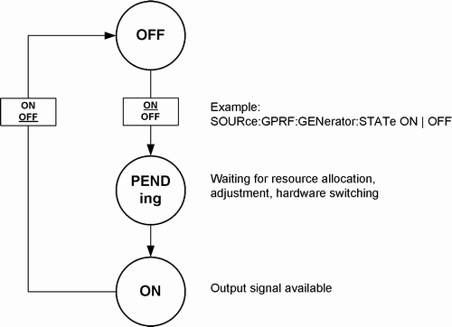

The commands used to control an RF signal generator are analogous to the commands explained in section "Measurement Control". A generator is in one of the following generator states:
- OFF: Generator turned off, resources either released or (partially) reserved from the last time the generator was turned on.
- PENDing: Generator turned on, but still waiting for resource allocation, adjustment, hardware switching. No output signal is available at the selected output connector.
- ON: Generator turned on, with all necessary adjustments finished. An output signal is available at the selected output connector.
The OFF and PENDing/ON states correspond to the status indication "Off" and "On" in the generator softkeys. The relationship between generator commands and generator states is shown in the following diagram:

Generator control commands are of the following type (see also "Firmware Applications"):
Example: SOURCe:GPRF:GENerator:STATe ON | OFF
Starts the generator, reserves all necessary hardware and system resources and changes to the generator state "PENDing", then "ON". If the generator is already turned on, the command has no effect.
If the hardware and system resources are already assigned to another firmware application, this firmware application is released to start the generator; see "Resource and Path Management".
If the generator cannot be started due to an unrecoverable resource conflict (e.g. a missing software option), it remains in the OFF state. The SCPI error "-213, Init ignored, ...", is generated. See also "Causes for Task Conflicts".
Command synchronization Before you use the generator signal, use the query SOURce:<Application>:GENerator<i>:STATe? to ensure that the generator has reached its ON state and that the generator signal is available. |
Switches off the generator, releases the hardware resources for other generators, and changes to the generator state "OFF". If the generator is already turned off, the command has no effect.